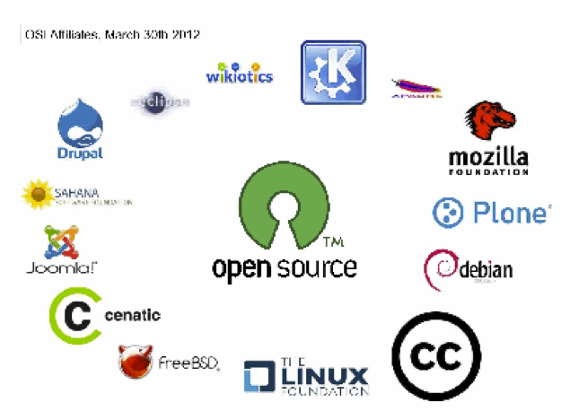

라. 오픈소스
1998년 2월 3일 자유 소프트웨어 리더와 전문가들이 모여 토론을 벌였다. 넷스케이프 웹브라우저의 원시 소스 코드를 어떤 형태로 공개하는지를 정하는 전략 회의였다.
이 자리에서 '오픈소스'란 용어가 새롭게 붙여졌다. '오픈소스'라는 용어를 만든 피터슨은 "오픈소스 소프트웨어란 용어의 도입은 신규 유입자와 사업가에게 더 잘 이해되도록 하려는 노력으로 만들어진 의도된 노력이었다." 그리고 "더 넓은 사용자 커뮤니티로 확산될 필요성을 보여준다."고 말했다.
그 후 넷스케이프는 소스 코드와 프로그래밍 방법을 개발자들에게 공개하였다. 이 프로젝트의 이름은 모질라(Mozilla)였다. 이후로도 계속해서 중요한 소프트웨어들이 오픈소스로 개발되고 있다.
심지어 오픈소스를 비난하던 영리 기업들도 오픈소스를 도입하고 있다. 마이크로소프트는 리눅스를 지원하고, 자사 소프트웨어를 오픈소스와 연동하여 일부 소프트웨어를 오픈소스화했다.
이런 변화의 이유는 영리 기업들이 많은 연구개발비를 들여서도 만들지 못한 혁신을 오픈소스가 만들어냈기 때문이다. 바야흐로 오픈소스는 대세가 되었다.
